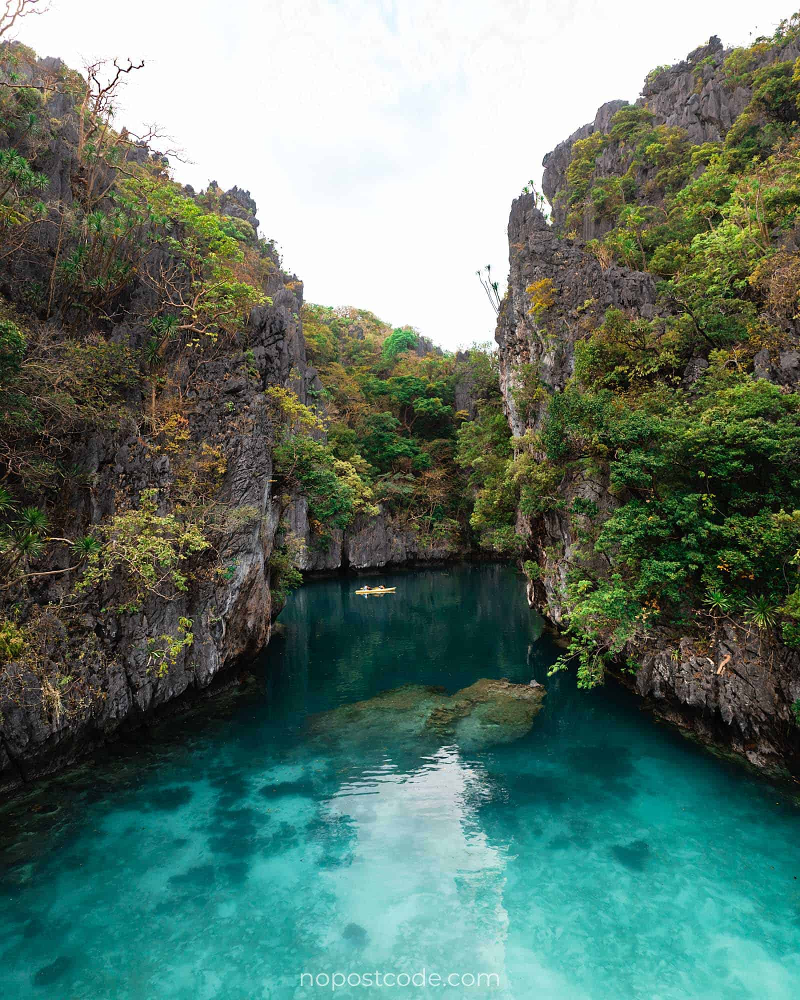
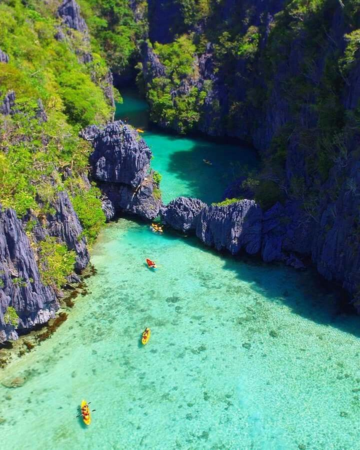
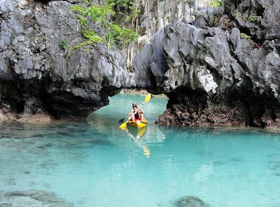
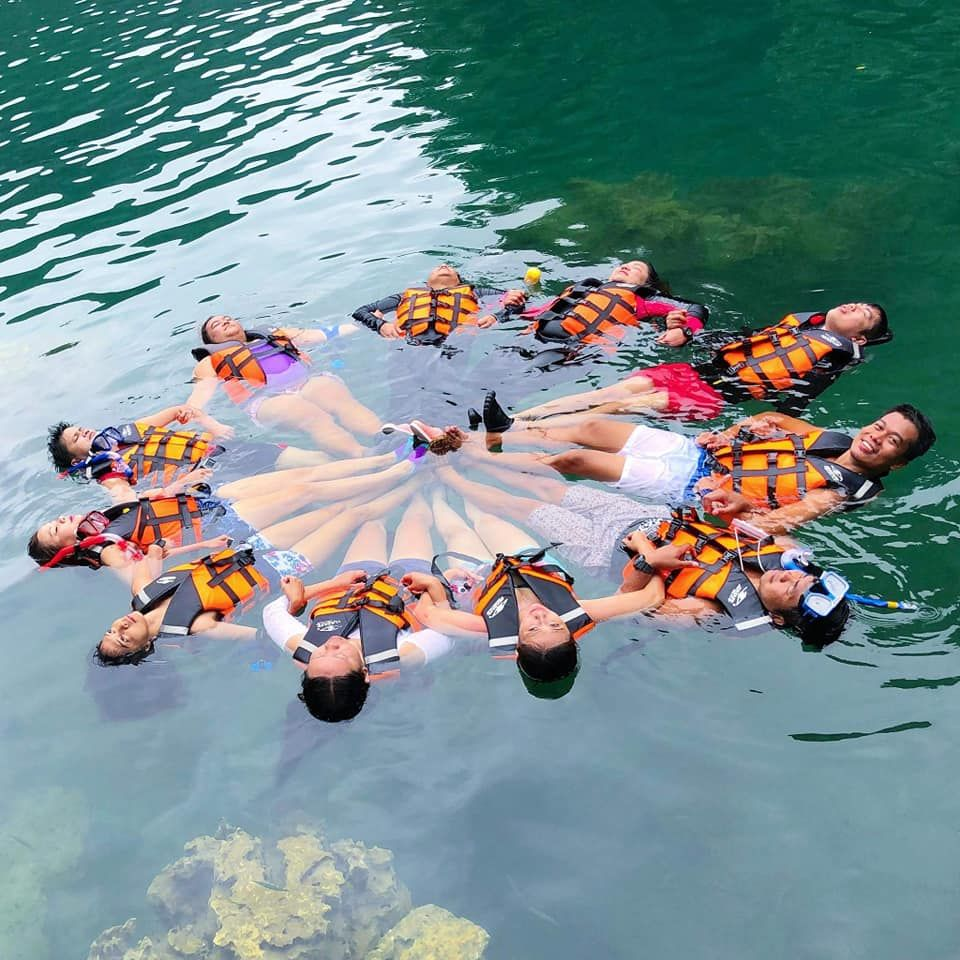
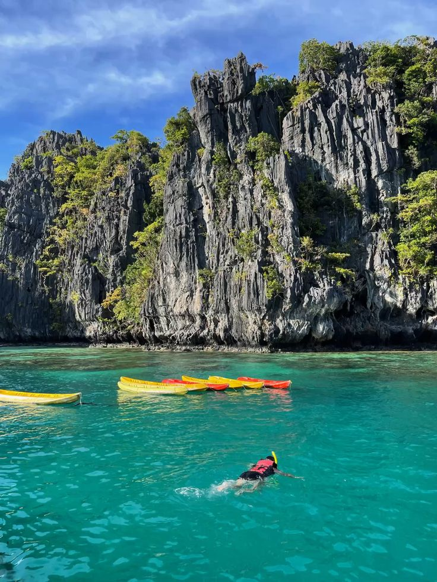
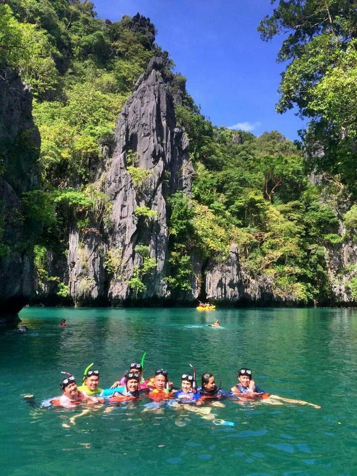
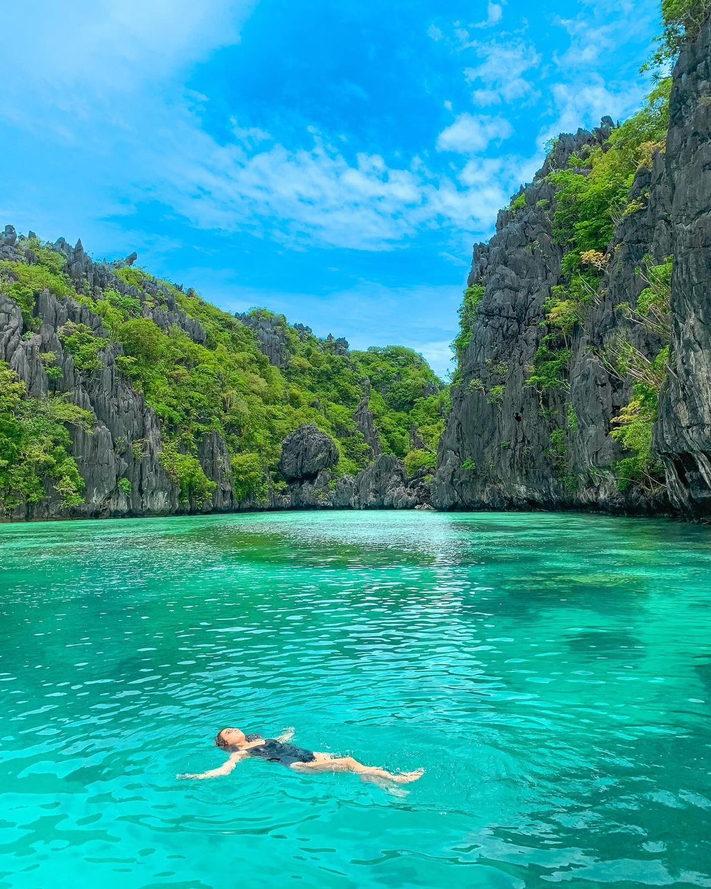
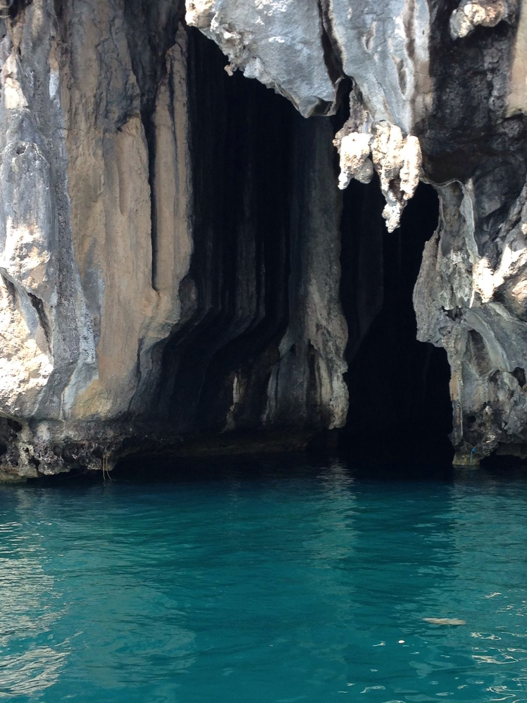

ABOUT SMALL LAGOON
(EL NIDO)
El Nido's Small Lagoon, located in the Philippines, is a hidden gem that offers a unique and tranquil experience for its visitors. Nestled within towering limestone cliffs on Miniloc Island, the Small Lagoon is a part of the stunning El Nido archipelago, a renowned area for its natural beauty and biodiversity. The lagoon is accessible by a small break in the cliffs, which can be traversed by kayak or swimming during low tide. Passing through the small break can be a bit terrifying and exciting (just a tiny bit!), specially if you’re not sure if you and your kayak would fit in the break.
The Small Lagoon is a spectacle of nature's grandeur. Its turquoise waters are crystal clear, offering a glimpse into the underwater world of diverse marine life. The lagoon is surrounded by imposing limestone cliffs covered in lush vegetation, creating a stunning contrast against the azure waters. The lagoon's tranquility is its most captivating feature, offering a serene environment that allows visitors to connect with nature intimately.
KEY TAKEAWAYS:
-- The Small Lagoon is famous for its calm, turquoise waters and dramatic limestone cliffs.
-- Smaller and more secluded than Big Lagoon, it offers a peaceful and intimate experience, ideal for travelers who want to avoid crowds.
-- Access to the lagoon is through narrow entrances, so only kayaks or swimming can take you inside—boats cannot enter.
-- Kayaking lets visitors explore hidden corners, reflective waters, and the surrounding cliffs up close.
-- The lagoon is perfect for snorkeling, with clear waters revealing vibrant fish, colorful corals, and marine life.
-- Its unique natural formations and serene environment make it highly photogenic, ideal for photography or simply admiring the scenery.
-- Small Lagoon provides a more personal and quiet experience compared to the larger Big Lagoon.
-- It is one of the must-visit destinations in El Nido, attracting nature lovers, adventurers, and those looking to relax in a stunning natural setting.

Why Visit Small Lagoon in El Nido?
The Small Lagoon is a hidden gem known for its crystal-clear turquoise waters and towering limestone cliffs. Smaller and more secluded than Big Lagoon, it offers a peaceful and intimate escape, making it perfect for travelers who want to enjoy nature away from crowds. The lagoon’s narrow entrances and quiet environment create a sense of seclusion, allowing visitors to fully immerse themselves in its natural beauty.
Exploring the Small Lagoon is best done by kayak or swimming, since boats cannot enter the narrow passages. Visitors can paddle through calm waters, discover hidden corners, and enjoy snorkeling among vibrant fish and colorful coral reefs. Its stunning scenery makes it highly photogenic, providing unforgettable moments for nature lovers and adventurers. With its serene environment and unique landscapes, Small Lagoon is one of the must-visit destinations in El Nido and a top attraction in the Philippines.
What to Expect in the Small Lagoon in El Nido Tour
Visiting the Small Lagoon is a unique experience that combines serenity and adventure. The lagoon is known for its calm, turquoise waters surrounded by towering limestone cliffs, creating a dramatic and photogenic setting. Unlike Big Lagoon, Small Lagoon is smaller and more secluded, offering visitors a peaceful escape and a chance to enjoy nature away from crowds. Its narrow entrances mean boats cannot enter, so exploring the lagoon requires kayaking or swimming, which adds to the sense of adventure and discovery.
Inside the lagoon, visitors can expect to find hidden corners, quiet coves, and vibrant marine life, including colorful fish and coral formations. The calm waters make it perfect for kayaking, snorkeling, or simply relaxing, while the surrounding cliffs provide stunning views for photography or sightseeing. Small Lagoon is an ideal destination for nature lovers, adventurers, and anyone looking to create memorable experiences in one of the most beautiful locations in El Nido.
Small Lagoon in El Nido Travel Tips:
Visiting the Small Lagoon in El Nido, Palawan, is an incredible experience that requires a bit of preparation and planning. Here are some useful tips to ensure a smooth and enjoyable visit:
1. Book your tour in advance: To secure your spot and avoid disappointment, it’s advisable to book your island-hopping tour, which includes the Small Lagoon, in advance. This way, you can choose a reputable tour operator and have peace of mind knowing that everything is arranged for your visit.
2. Be mindful of the weather: Make sure to bring essentials such as sunscreen, insect repellent, a towel, a change of clothes, and drinking water. Protecting yourself from the sun, insects, and staying hydrated is crucial for a comfortable experience in the Small Lagoon.
3. Pack essentials: Kayaking is one of the best ways to explore the lagoon, especially the shallow inner areas that boats can’t reach.
4. Wear appropriate swimwear and footwear: It’s recommended to wear comfortable swimwear as you’ll be engaging in water activities. Additionally, consider wearing water shoes or sandals with good grip to protect your feet from sharp rocks and slippery areas.
5. Practice responsible tourism: Respect the pristine beauty of the Small Lagoon by following sustainable tourism practices. Refrain from littering, damaging coral reefs, or touching marine life. Help preserve this natural wonder for future generations to enjoy.
6. Listen to your guide: Pay attention to the instructions provided by your tour guide. They have local knowledge and insights that will enhance your experience and ensure your safety. Follow their guidance when it comes to navigation, proper behavior, and environmental protection.
7. Respect other visitors: The Small Lagoon may attract a number of visitors at any given time. Be considerate of others by sharing space, maintaining a peaceful atmosphere, and avoiding excessive noise or disruptive behavior.
8. Capture memories responsibly: Take photos and capture the beauty of the Small Lagoon, but do so responsibly. Avoid touching or damaging the surroundings and be mindful of other visitors while taking your shots. Leave nothing but footprints.
9. Be prepared for limited facilities: Keep in mind that the Small Lagoon is a natural and remote area. Facilities may be limited, so it’s advisable to bring your own snacks, as well as any personal items you might need for the duration of the tour.
10. Embrace the experience: Finally, remember to enjoy every moment of your visit to the Small Lagoon. Immerse yourself in the stunning beauty, take a moment to appreciate the tranquility, and create lasting memories in this hidden gem of El Nido.
Things to do in the Small Lagoon
The Small Lagoon offers a range of activities that cater to different interests and preferences. Here are some of the exciting things you can do when visiting this enchanting destination:

1. Kayaking:
Renting a kayak is one of the most popular activities in the Small Lagoon. Glide through the calm waters, maneuvering through the narrow entrance and exploring the lagoon’s nooks and crannies. Kayaking allows you to fully immerse yourself in the stunning surroundings and provides a sense of adventure and freedom.

2. Swimming:
If you’re a confident swimmer, you can also choose to swim from the boat to the Small Lagoon’s entrance. Feel the refreshing water against your skin as you make your way into the lagoon. Swimming allows for a closer connection with nature and provides a unique perspective of the lagoon’s beauty.

3. Snorkeling:
Put on your snorkeling gear and dive into the clear waters of the Small Lagoon. Discover the vibrant coral reefs that thrive in this protected area, along with an array of colorful fish and marine life. Snorkeling in the Small Lagoon offers a glimpse into the rich biodiversity of this tropical paradise.

4. Photography:
The scenic beauty of the Small Lagoon provides ample opportunities for photography enthusiasts. Capture the reflection of the cliffs in the calm waters, the lush greenery that surrounds the lagoon, and the vibrant underwater world. Explore different angles and compositions to capture unique and memorable shots.

5. Relaxation:
Take a moment to unwind and soak in the tranquility of the Small Lagoon. Find a quiet spot on the kayak or a floating device and simply enjoy the peaceful atmosphere. Let the beauty of nature wash over you as you revel in the serenity of this hidden gem.

6. Caving:
For those looking for more adventure, some tours may include a visit to the nearby Big Lagoon, which offers an opportunity to explore a limestone cave. Traverse through the cave’s winding passages and marvel at the intriguing rock formations. This adds an extra layer of excitement and exploration to your Small Lagoon experience.
LOCATION OF SMALL LAGOON(EL NIDO):
-- The Small Lagoon is situated in the breathtaking El Nido region of Palawan, Philippines. El Nido is a municipality consisting of 45 islands and islets, each offering its own unique charms. The Small Lagoon is located on the island of Miniloc, one of the most popular islands in the area.
-- Miniloc Island is known for its dramatic limestone cliffs, crystal-clear waters, and stunning marine life. It is surrounded by other equally enchanting islands like Dilumacad, Shimizu, and Entalula. The island is accessible by various means of transportation, making it convenient for visitors to reach the Small Lagoon.
-- To get a better idea of the Small Lagoon’s location, it is approximately 238 kilometers from Puerto Princesa, the capital city of Palawan. It takes around 5-6 hours by land travel and approximately 6-7 hours by boat to reach El Nido town proper, the gateway to the Small Lagoon.
-- Once you arrive in El Nido town, you will need to take a boat to reach Miniloc Island. The boat ride typically takes around 40-45 minutes, allowing you to soak in the scenic views of the towering cliffs and turquoise waters along the way. It’s important to note that the boat ride may vary depending on the weather and sea conditions.
-- Upon reaching Miniloc Island, you will find the Small Lagoon nestled within the island’s exquisite natural surroundings. The lagoon is accessible through a narrow entrance, surrounded by towering limestone cliffs and lush vegetation, creating a sense of tranquility and escapism.
-- Overall, the Small Lagoon’s location within the stunning El Nido region of Palawan adds to its allure and makes it a must-visit destination for anyone looking to experience the pristine beauty of the Philippines.
CONCLUSION
In conclusion, Small Lagoon in El Nido is a serene and captivating destination that offers visitors an intimate connection with nature. With its crystal-clear turquoise waters, towering limestone cliffs, and vibrant marine life, the lagoon provides a peaceful escape away from crowds. Kayaking, swimming, snorkeling, and photography allow travelers to fully experience its hidden corners and photogenic scenery, while the quiet and secluded atmosphere ensures a truly relaxing adventure.
By practicing responsible tourism and respecting the fragile ecosystem, visitors can help preserve Small Lagoon’s pristine beauty for future generations. Whether seeking adventure, relaxation, or memorable photo opportunities, the Small Lagoon promises an unforgettable experience in one of the Philippines’ most enchanting natural landscapes.